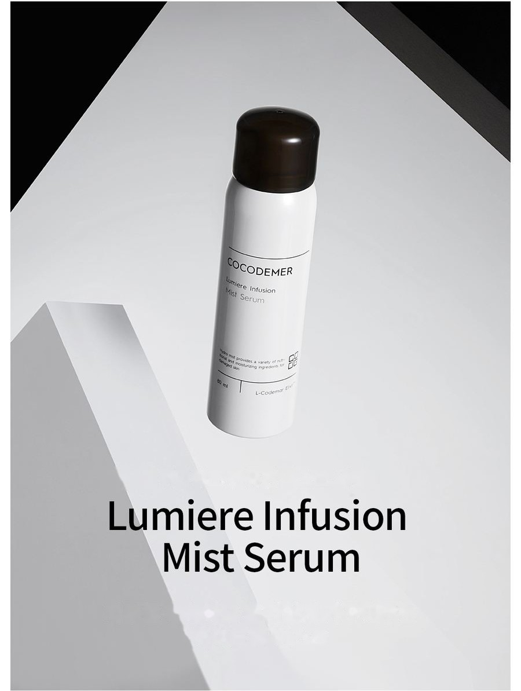
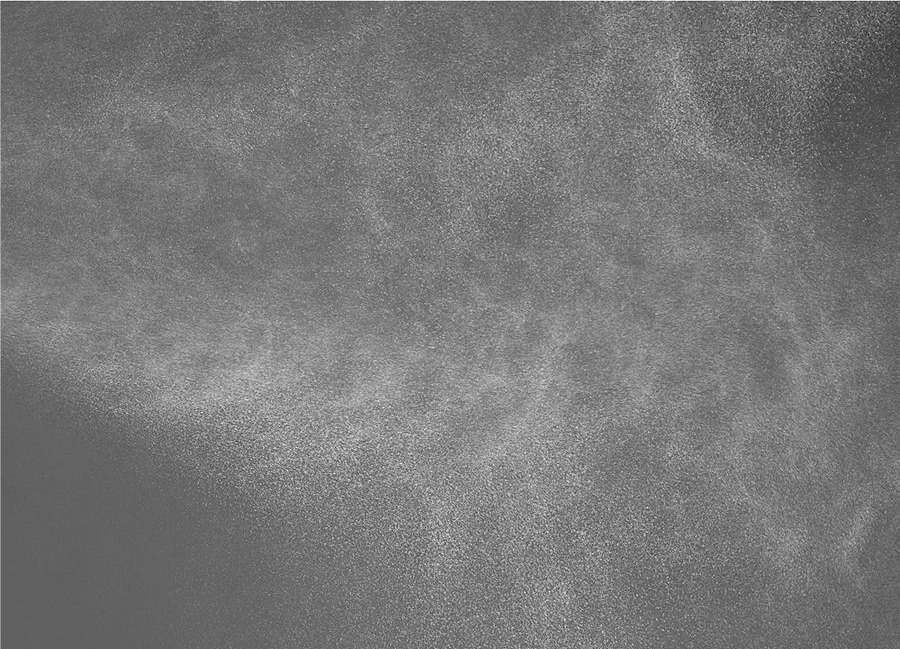
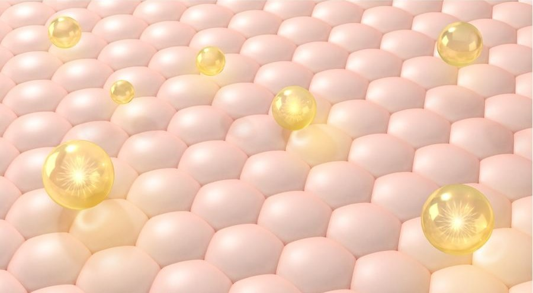

COCODEMER Lumiere Infusion Mist Serum
| Volume | 80ml |
|---|---|
| Suitable for | All skin types |
| Key technology | L-CODEMAR ELIXIR™ |
| Manufacturer · Responsible distributor | JUNGCOS CO., LTD. / COCODEMER CO., LTD. |
This product is not yet listed on the Smart Store. For purchases, please use the store, or contact us through the B2B inquiry.

A hydro mist that leaves skin moisturised and luminous
A hydro mist that nourishes richly and hydrates deep down
80% carbonated water carries moisture deep into the pores, reviving tired skin and leaving it healthier.
A veil of moisture, formed by a range of humectants, limits water loss and buffers skin against stress, so hydration lasts longer.
Functional brightening and anti-wrinkle ingredients help improve skin tone and restore the skin's regeneration.

A high concentration of stabilised natural oils (macadamia ternifolia seed oil, meadowfoam seed oil, macadamia oil and others) sits easily on the skin and reaches further into it,
while an ultra-fine mist leaves the skin smooth and luminous.
Low- and high-molecular-weight hyaluronic acid care for moisture on both sides of the skin, guarding against dryness and outside stress.
The result is healthy, hydrated skin with no stickiness.
Fermented ingredients defend against harmful bacteria and pollutants at source, keeping sensitive skin healthy.
Key Active Code
- MoMoisturizing
- AwAnti Wrinkles
- WhWhitening
- TbTrouble relief
- BsBase
It fills the skin with moisture deep down and tightens the pores at the same time. It also blocks water loss and helps build a healthy sebum film, leaving skin hydrated and comfortable, never sticky.

Where collagen and elastin function has declined with age, it stimulates their production, improving skin elasticity and helping the skin recover.
Niacinamide, a functional brightening ingredient that helps improve circulation, works alongside bioflavonoids — the vitamin P compounds that suppress free radicals. Together they help improve skin tone.
* The above describes the ingredients, not the finished product.
See the ingredient reference →
L-CODEMAR ELIXIR™
COCODEMER's proprietary technology.
Our multi-layer nano-gel emulsion encapsulation technology holds the core actives — coconut water, phytosterols, 20 amino acids and honey extract — in a stable complex. That complex is then built into a skin-friendly liposomal form that mirrors the structure of skin itself, for the most efficient delivery into the skin.
L-Codemar Elixir™ strengthens the bonds between skin cells. It restores a damaged barrier and forms a strong protective film, so hydration holds for longer.


How To Use
Close your eyes and spray evenly over the whole face from about 20 cm away, then pat lightly to absorb.
A hydro mist that nourishes richly and hydrates deep down
80% carbonated water carries moisture deep into the pores, reviving tired skin and leaving it healthier.
A veil of moisture, formed by a range of humectants, limits water loss and buffers skin against stress, so hydration lasts longer.
Functional brightening and anti-wrinkle ingredients help improve skin tone and restore the skin's regeneration.
A high concentration of stabilised natural oils (macadamia ternifolia seed oil, meadowfoam seed oil, macadamia oil and others) sits easily on the skin and reaches further into it, while an ultra-fine mist leaves the skin smooth and luminous.
Low- and high-molecular-weight hyaluronic acid care for moisture on both sides of the skin, guarding against dryness and outside stress. The result is healthy, hydrated skin with no stickiness.
Fermented ingredients defend against harmful bacteria and pollutants at source, keeping sensitive skin healthy.
It fills the skin with moisture deep down and tightens the pores at the same time. It also blocks water loss and helps build a healthy sebum film, leaving skin hydrated and comfortable, never sticky.
Where collagen and elastin function has declined with age, it stimulates their production, improving skin elasticity and helping the skin recover.
Niacinamide, a functional brightening ingredient that helps improve circulation, works alongside bioflavonoids — the vitamin P compounds that suppress free radicals. Together they help improve skin tone.
* The above describes the ingredients, not the finished product.
L-CODEMAR ELIXIR™
COCODEMER's proprietary technology. Our multi-layer nano-gel emulsion encapsulation technology holds the core actives — coconut water, phytosterols, 20 amino acids and honey extract — in a stable complex. That complex is then built into a skin-friendly liposomal form that mirrors the structure of skin itself, for the most efficient delivery into the skin. L-Codemar Elixir™ strengthens the bonds between skin cells. It restores a damaged barrier and forms a strong protective film, so hydration holds for longer.
Close your eyes and spray evenly over the whole face from about 20 cm away, then pat lightly to absorb.
| Net volume or weight | 80ml |
|---|---|
| Suitable for | All skin types |
| Shelf life / period after opening | 30 months from date of manufacture; use within 12 months of opening |
| How to use | With eyes closed, hold the bottle about 20cm from the face, mist evenly over the whole face and pat lightly to absorb. |
| Cosmetics manufacturer | JUNGCOS CO., LTD. |
| Responsible distributor | COCODEMER CO., LTD. |
| Country of origin | Republic of Korea |
| Full ingredients (INCI) | Carbonated Water, Methylpropanediol, Glycerin, Niacinamide, Pentylene Glycol, Centella Asiatica Extract, Ficus Carica (Fig) Fruit Extract, Honey Extract, Carthamus Tinctorius (Safflower) Seed Oil, Cocos Nucifera (Coconut) Water, Hydrogenated Lecithin, Limnanthes Alba (Meadowfoam) Seed Oil, Macadamia Ternifolia Seed Oil, Oenothera Biennis (Evening Primrose) Oil, Sodium Hyaluronate, 1,2-Hexanediol, Acetyl Hexapeptide-8, Adenosine, Alanine, Alcohol Denat., Allantoin, Arginine, Aspartic Acid, Betaine, Bioflavonoids, Butylene Glycol, Carbomer, Carnitine, Carnosine, Ceramide NP, Cetearyl Alcohol, Cetyl Ethylhexanoate, Citric Acid, Citrulline, Creatine, Disodium EDTA, Ethylhexylglycerin, Glucosyl Hesperidin, Glutamic Acid, Glutamine, Glycine, Hydrogenated Phosphatidylcholine, Hydrogenated Polydecene, Inositol, Isoleucine, Isononyl Isononanoate, Leucine, Methionine, Myristic Acid, Neopentyl Glycol Diheptanoate, Ornithine, Palmitic Acid, Palmitoyl Pentapeptide-4, Panthenol, PEG-40 Hydrogenated Castor Oil, Phenylalanine, Phytosterols, Polyglyceryl-10 Myristate, Polyglyceryl-10 Stearate, Polyglyceryl-2 Stearate, Polyquaternium-51, Polysorbate 20, Proline, Propanediol, Raffinose, Serine, Sodium Citrate, Sodium Stearoyl Glutamate, Squalane, Stearic Acid, Threonine, Tranexamic Acid, Trehalose, Tryptophan, Tyrosine, Valine, Water, Fragrance (Parfum), Limonene, Phenoxyethanol |
| Functional cosmetic approval | Functional cosmetic for brightening · wrinkle improvement |
| Precautions | 1. If red spots, swelling, itching or other unusual reactions or side effects occur on the treated area during or after use, or on exposure to direct sunlight, consult a specialist. 2. Avoid use on broken or damaged skin. 3. Storage and handling precautions a. Keep out of reach of children. b. Store away from direct sunlight. 4. Aerosol product (non-flammable gas) (1) Shake well before use. (2) Do not spray continuously on the same area for more than 3 seconds. (3) Where possible, use at a distance of at least 20 centimetres from the body. (4) Do not spray around the eyes or on mucous membranes. (5) Take care not to inhale the propellant directly. (6) Storage and handling precautions (a) Do not store at temperatures above 40°C. (b) Do not dispose of in fire. (c) Ensure no gas remains in the can before disposal. (d) Do not store in an enclosed space. |
| Quality guarantee | In the event of a defect, compensation is provided in accordance with the Consumer Dispute Resolution Standards published by the Korea Fair Trade Commission. |
| Customer enquiries | 010-3307-9341 / cocodemer@cocodemer.co.kr |
* Required disclosure under Korean cosmetics labelling and advertising rules. This is a reference translation; for the certified ingredient declaration, CPSR or CoA, please contact us through the B2B enquiry.